ComputeShader-URP沙地/雪地上脚印/车辙效果实现
Febr 20, 2023
 最☆终★效☆果
最☆终★效☆果
目录
1.轨迹效果+轨迹消失基础。
2.进一步优化轨迹代码。
3.轨迹形状制作-法线版本。
4.曲面细分着色器。
5.自定义置换贴图+法线。
6.其它重要优化。
7.加入美术效果
本次算是自己给自己的一个综合人物，目标是做出类似雪山赛车的轨迹效果，并且支持在凹凸不平的大型场景中运行，尽可能优化性能，当然能否用作落地还需探讨。
出于性能的分析，从不同平台分析可以用到的方法，如果是在PC端的话，用CS做位移贴图+曲面细分着色器应该是最好的方法吧，虽然兼容性可能并不那么强。
等完全做完了之后回头看看，这篇反而更像是笔记了，有一种成长的美（草）。
2.24补：第一节和第二节的两张gif由于当时没有压缩，事后已经调没了，所以没有补录，大家注意流量，红豆泥私密马赛orz。
1.轨迹效果+轨迹消失
Editor端初步效果（除了轨迹效果外什么都没开） （从美术的角度来说并不好看，并且有明显的锯齿，只是实现个轨迹+消失的效果而已）
（从美术的角度来说并不好看，并且有明显的锯齿，只是实现个轨迹+消失的效果而已）由于方法定在了ComputeShader（简称为cs），所以核心思路肯定是在C#脚本中给cs传值然后处理RenderTexture的计算，最后利用得到的RenderTexture来实现效果。
在这一部分我希望可定义的参数有：轨迹的颜色、轨迹的大小、轨迹消失的时间。沙漠和雪原这种地图都是非常庞大的，而轨迹是一个和地图大小无关的细节型纹理， 如果用整张地图的大纹理作为计算目标显然非常消耗性能，几乎不可能实现。但是脚印存在时间是有限的，所以很容易想到可以创建一个跟随着玩家的纹理，只要玩家在全速奔跑的时候离之前踩过即将消失的脚印之间的距离不超过 这个纹理的长度，就可以用这个纹理代替大地图来实现运算。这里用来跟随的物体肯定是选用平面来测试最为直观，平面的Transform大小也可以为我们更改纹理大小起到一个直观显示的帮助作用。
而当选用跟随玩家的平面来进行制作的话，就代表着玩家可以看做永远处在纹理中心点的位置，在脚本中我们可以根据玩家位移的位置和平面的大小来算出在此刻处在纹理(x,y)位置的点之前一帧处于什么位置。
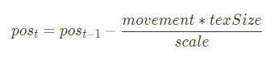 其中movement指玩家在此帧中的移动向量，texSize指用来储存轨迹的纹理大小，越大纹理的精度越高，支持的轨迹范围也越大，scale是平面的lossyscale。值得一提的是，当向量中某通道的值特别低时可以考虑将其归零，避免因为精度导致的即使人物不动轨迹也在移动的问题，如果是人物也在移动的话虽然也会有精度问题，但没那么容易看出来，精度问题是非常难以避免的。
为了完成迭代，我们需要两张Rt，一张targetRT作为计算的结果来使用，一张originalRT用来储存当前帧的结果供下一帧来使用，后一张属于临时纹理，所以只需要用Temporary就可以了。
在cs中，由于玩家在纹理中的位置永远处于中心，所以用当前位置和中心位置作距离，再与设定的轨迹的大小比较就能判断是否要在该位置添加新的轨迹，如果需要添加新的轨迹，直接在targetRT里修改。
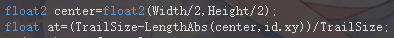 然后在脚本中用Graphics.Blit()函数把targetRT赋给originalRT，就能完成一次迭代。
但是很显然，现在的效果是走出来的轨迹不会消失，因为我们并没有计算消失的逻辑。一般来说，雪地中的脚印消失效果都是： 踩下去之后，脚印持续一段时间t1，然后在另一段时间t2内逐渐消失，我希望能够精确地控制t1和t2，但是在cs中能获取到的只有当前位置目前的颜色，仅靠这个参数是不够完成目标效果的， 我们还需要获取当前这个脚印已经存在多久了，这样就能完成效果，而纹理中每一个位置的时间都需要记录，我姑且开了一张新的Rt来储存时间，这样多浪费了很多空间，这些空间将会在之后的内容进行优化。
有了时间之后就可以实现上述的效果了，我们在当前位置重新生成脚印的范围内把时间设置为1，然后在各个位置让时间以参数设定的速率减少，然后在时间小于一定的阈值之后用线性插值来更新脚印的透明度，当时间归零时脚印的透明度也归零，这个过程可以用一个乘法的trick来避免使用if语句。
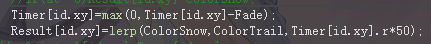 这样我们就通过C#脚本和cs完成了轨迹的生成，接下来就是轨迹的使用，如果是平地地形的话我们大可以直接把这个平面的材质底色换成雪地的颜色直接显示出来，但是在凹凸起伏的地图上这样就行不通，不过由于玩家的位置和平面的大小都是已知的参数，我们只需要在雪地地形的材质片元着色器上利用世界坐标来计算一下就能把轨迹叠上去。
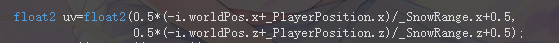 这样计算得到的uv由于使用了纹理clamp计算，所以超过范围的值会被放到边缘，而边缘大概率是没有轨迹的，所以也是可行的，如果还是产生了这个原因导致的大片错误颜色，可以考虑对这个uv进行特殊判断或者是在cs中把边缘特殊处理，不过都会消耗一点性能。
到这一步就完成了一个基础的轨迹效果，这个效果无论和场景的大小和凹凸程度无关，但是在多层的地图上可能会产生bug。 目前的轨迹只是一个简单的白色圆形，雪地shader上的计算也只是把颜色叠加上去，但是利用cs可以实现自定义的纹理形状，甚至是用视差或者法线贴图来实现更真实的效果。
2.进一步优化轨迹代码
 上一节原有的代码显然存在由于精度导致的误差问题，只不过我通过把movement向量中较低的值归为零来避免了移动距离过近的时候产生的明显误差（即使人物在墙角几乎没有动，脚下的轨迹也会移动）。
上一节原有的代码显然存在由于精度导致的误差问题，只不过我通过把movement向量中较低的值归为零来避免了移动距离过近的时候产生的明显误差（即使人物在墙角几乎没有动，脚下的轨迹也会移动）。当然，在计算机图形学中，看上去是对的那就是对的，高速移动时远处的轨迹问题反正也看不出来（确信），不过为了精益求精我们还是追求把误差进一步消去。
观察误差产生的原因，因为我们使用的RT大小有限，无法把整个移动范围完全细分，而在计算偏移位置的时候算出的数组下标是一个整数，在这个过程中偏移的小数部分被丢失，积累了一定误差之后就会出现某一次的偏移值错误的情况，导致脚下的轨迹进行错误的偏移。
在shader中，因为不可能把使用整数下标来采样的纹理变成用小数采样，所以只能考虑把误差转移到其他部分。由于纹理是以角色为中心的，而角色的位置精度必须是尽可能大的，要不然人物的移动就会呈现锯齿的状态了，所以这里最好把误差放在构造出的RenderTexture上。
我们知道，在这个跟随玩家的平面某一维度中最小的长度单位应该是：这个平面的长度/RenderTexture在这维度上的分辨率，因此我们在C#脚本中把角色的具体位置离散化到最小单位为上述最小长度的网格中，用在这个离散系下的移动距离和位置来计算偏移值、传入shader。
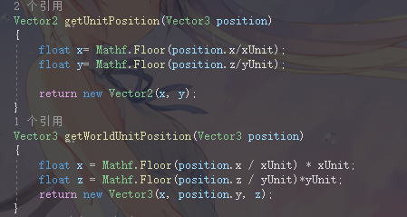 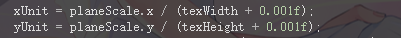 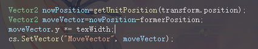 这样一来，误差只会产生在当RT分辨不够高的时候，脚下产生的脚印和角色位置之间，且误差距离在unit之内，只要在unit够小的的时候就完全感受不出来误差了。
其次，标题虽然是“基于ComputeShader的实现方式”，但现在已有的内容其实即使不用ComputeShader，只用blit也可以实现，那么接下来就加入一些ComputeShader内容。
在之前的代码中，为了记录纹理中每个位置上脚印出现后的时间，我们开了一张纹理，而这个纹理为了和之前一帧的进行迭代，又附带了一张新的纹理，这两张纹理都只有一个通道是有用的，毫无疑问浪费了很多空间，实际上要存储一个和纹理大小相同的数组根本不需要新开纹理，而是可以使用ComputeBuffer来实现。
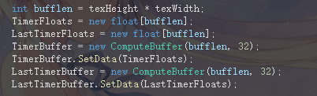 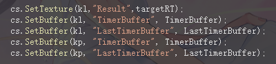 在使用ComputeBuffer代替原来的纹理之后，游戏的全屏延迟其实没有怎么减少（还是3.3ms左右），那是因为这个方法其实并没有减少时间复杂度，仅仅是优化了空间。
大家可能已经发现，实际上最后雪地shader上的计算仅靠c#脚本传入的玩家位置和判定范围来完成，跟随玩家的那个平面并没有实际作用，只是用来界定大小的工具，因此我们也可以仅用一个Vector2来代替它，避免一个平面带来的性能消耗和不必要的问题。 到此为止效果的第一步就完成了，当然，可以用其它的计算方法让轨迹和形状更美观、轨迹的消失更加丝滑，不过现在这个轨迹效果已经可以接受。
附上到目前为止的代码：链接。
3.轨迹形状制作-法线
 简单用法线捏的一个效果，可以看出来不是很理想，有很多锯齿。
简单用法线捏的一个效果，可以看出来不是很理想，有很多锯齿。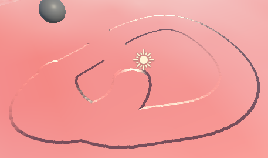 用个小trick稍微减少了锯齿。
在前两步中完成了一个简单的轨迹效果，但是现在的轨迹只是一片纯色，看起来不像是真的轨迹，可以考虑使用一些方法来让它变成真正的轨迹，这里先采用一个相对简单的直接计算法线的方法来完成。
假定现在有一个圆形的坑，它的横截面看起来像是一个y=x^6的函数曲线，坑的底部是(0,0)，边缘是(1,1)和(-1,1)，那么我们可以通过求导的方法来求出法线，把三维空间看成是由无数个与水平面垂直的平面组成的，每个平面都是上述的函数，那么我们只需要知道这个平面的基向量和曲线中的x，就能算出一个位置的法线。
这么一来，在ComputeBuffer中需要存储的值就定为了：1.点的水平面方向向量，2.点距离自己的圆坑中心的距离，3.点当前的“时间”（在上一节中说明）。
而这些属性和第二节中的透明度一样，需要用时间来插值计算出来，因此我们还需要一个参考值来进行插值运算来完成衰减效果，分别对应时间的0和1（1是刚被踩过的时间点，0是没有被踩过的时间点），对于向量来讲，这个参考值显然就是自己的(0,0)和自己未被衰减时的向量值，因为对于一个没有被踩过的点，它的法线水平分量显然是（0,0）。
而对于离圆坑中心的距离，参考值则是1和未被衰减时的距离，法线由当前值来计算得到，记得对法线进行pack，否则会因为纹理无法储存小于0的浮点值而产生错误。
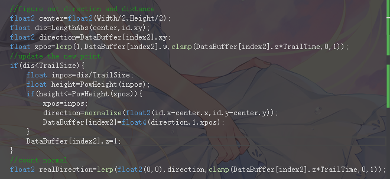 在C#脚本里设置相关的变量关联和内存释放，然后在shader中把原先采样RT叠加颜色的方法改成采样RT得到并unpack法线，就完成了这次的效果。 然后是图中出现的锯齿问题，显然，锯齿的产生源于之前把地图离散化造成的采样率不足，使得对法线的采样率远低于了屏幕显示出的采样率，因此相邻的两个圆坑之间出现了锯齿效果。
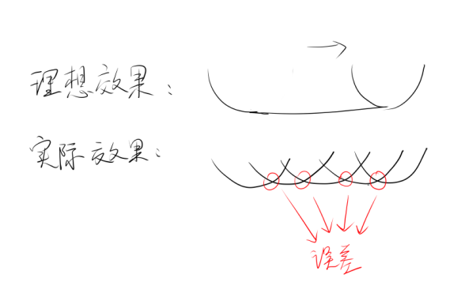 要解决这个问题，第一种想法：我们降低生成图形的精度（低通滤波），即对于整张法线贴图进行模糊，显然这个做法会消耗很多性能，而且效果并不好，至少我们希望在近处看自己踩出来的轨迹边缘是比较锐利的。
第二种想法：我们提升采样率，这个方法带来的代价更加的高，而且也无法彻底消除误差。
第三种想法：解决不了问题就解决产生问题的人，我们不使用这种圆坑形轨迹，而是使用一个超过这个采样率也没什么问题的轨迹，比如说一个底面更为平坦的“圆梯形”，这个图形很容易得到，只要把原来的圆坑进行一些特殊处理就行了。
这次选用的函数是y=max(0,6x^6-5)，它同样具有原本的性质，只不过底面更加的扁平，它的导数在零点左边是0，在零点右边是36x^6。 可以看出来其实还是有细小的噪点，而且坑位变浅了，这是因为这个函数的变化率太高了，一小片区域的法线并不能达到足够的视差效果，相信可以捏出一个更适合表现效果的函数，这里就不多试了。
不过更大的问题也确实存在：新的轨迹覆盖原有的轨迹，这个问题导致了边缘的法线被覆盖之后错误的计算，这个问题在当前的数据资源下是无法解决的，它的来源是因为法线计算在这个问题中其实并不合适。
为什么这么说呢？一是法线的计算需要知道某点位于圆坑的哪个位置，而实际上这个位置并不是唯一的，而是根据四周的地形高度来进行变化的，二是因为法线在圆坑的边缘是水平方向，而在圆坑外却是竖直方向，这个突跃处法线用时间来插值没有实际意义，此外，纯数据计算虽然非常直观且方便调整，但它最大的坏处是缺失细节。
而更能胜任这个工作的方法很显然：直接算出某点在某处的高度，使用位移贴图的方法。 代码：链接。
4.曲面细分真香
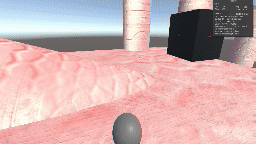
姑且像点样子了。上回说到因为法线贴图存在一个非线性突变的原因，光用法线来实现效果会出现很多问题，真正完全没有问题的方法是用高度去计算，选用位移贴图的方法，配合上曲面细分着色器让表面真的下降。当然，使用曲面细分会降低一定的兼容性（反正都用ComputeShader了），不过实现的效果无可挑剔。
使用位移贴图计算的话，第三节中需要储存的“点到圆坑的方向向量”就不需要用到了，只需要存高度和时间就可以了，ComputeShader的计算套路和之前一样，存储一个在“刚被踩下”时刻的高度，然后根据时间的插值公式来算出当前时间点实际的高度，把实际的高度写入RT。
而曲面细分着色器的编写在各大教程中都有提到，如果需要的话可以查看后面的代码链接（我自己的也是抄的），曲面细分的大小决定了效果的精细程度，如果细分过低的话可能会导致边缘处模型碎裂的情况。
此外，在上节的代码中会出现一个因为脚印半径过大导致走到墙边的时候墙上出现脚印的情况，在这节中把计算用的数据量替换为高度之后，我们可以通过判断高度来轻松完成判断来修正这种效果。 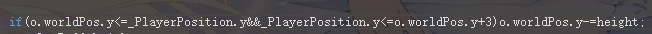 当然，更简单的方法是永远不要让脚印的范围出现在墙上。 代码：链接。
5.自定义置换贴图、附加法线
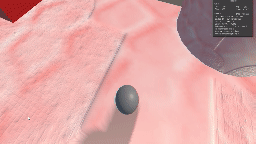
（然而其实并没有做法线，还是很丑233）
在完成4的基础上，进一步美化效果，用一张带信息的纹理来储存高度，从而可以完成gif中这样有高有低的效果，而不是单纯的一个圆形，采样的方法只是把原来基于距离计算的高度改成了按照uv进行采样。个人并没有使用非圆形的效果，所以不用根据玩家的面向来调整uv采样的方式，算是比较水的完成了这个效果。
 附加法线可以用同样的方法对一个法线贴图进行采样，但是法线也要加入按时间衰减的代码，否则会出现不正常的锐利效果。法线的三个维度和高度的一个维度刚好可以压缩进一个纹理里。
附加法线可以用同样的方法对一个法线贴图进行采样，但是法线也要加入按时间衰减的代码，否则会出现不正常的锐利效果。法线的三个维度和高度的一个维度刚好可以压缩进一个纹理里。代码：链接。
6.其它重要优化
1.曲面细分优化：曲面细分固然是越高效果越好的，然而对性能也是非常大的考验，大地图进行高精度的曲面细分非常的浪费，实际上在玩家踩不出坑的范围内曲面细分就已经没有意义了，因此在雪面shader中可以加入代码来判断当前的位置是否需要进行细分，只细分离玩家近的区域。代码非常的简单，只要在曲面细分函数里判断一下玩家位置到当前顶点的距离即可，和原先判断踩痕的算法没有任何区别。 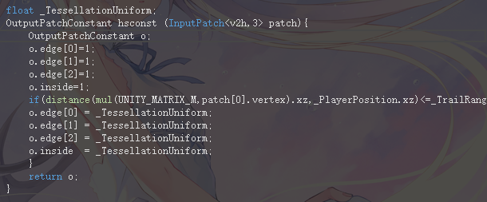 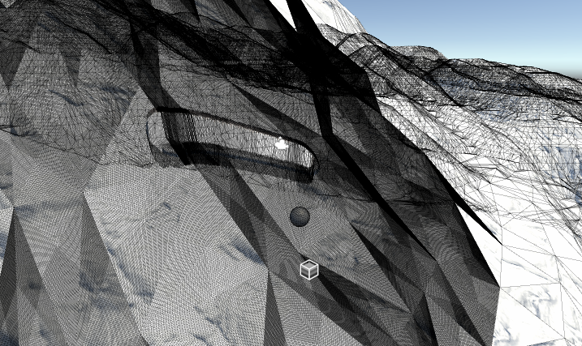 2.多单位优化：在这个做法里显然加入多单位就意味着成倍的运算量，这并不合适，这里我们可以使用前向渲染的类似规则——只考虑离自己最近的几个单位，当然这样一来在面对茫茫大军的时候就容易穿帮了。
3.有间隔的轨迹（脚印）：实际上这个做起来反而更加简单，因为轨迹出现的频率低了，采样率反而足够了，想怎么采怎么采。
4.更优雅地消失：现实生活中雪的恢复肯定不是像我做的这样跟衔尾蛇一样移动的，它们消失的时间和被踩出来的时间有时候并不成正比，具体优化的方法想必就见仁见智了233。
5.让轨迹更加平滑：在上一步中我们已经引入了法线贴图来制作更优秀的细节，但是法线制作的细节同样会带来问题：我们在compute shader的计算中，是靠高度来决定是否对一个点的高度和法线进行替换的，这对于高度固然没问题，但是如果想要实现完美的法线效果的话，就会发现在最低高度的一部分区域法线也是有倾斜度的。
这样的倾斜度使得运动起来的时候由于采样率的原因（没错，还是这个原因），会留下一片错误的法线，使之前的锯齿效果卷土重来。
想了三个解决方法：
1.继续套娃：在高度纹理当中，我们还有b和w两个通道没有使用，我们可以用这个通道来储存一个新的参量,决定当前的位置是否会覆盖原有的高度和法线，当然，这个参量的真值存在于法线贴图里正中间没有法线的那片区域，但这个做法并不巧妙，而且依然会面对采样率问题，并不自由。
2.万能模糊：采样率引起的问题就用低通滤波解决，把中间那片法线直接给模糊掉，但是，这里做的实际上并不是真正的模糊，而是有一个小trick：我们实际上只需要剔除掉踩出的道路中间的那部分法线就能完成效果，而怎么决定一个顶点是否在道路中间呢？只要取样这个像素点四个不同方向的点，如果四个点的高度全都是-1，也就是坑底，那这个点也在坑底，如果是在坑边缘的话，四个点里至少有一个点会出现在坑的上面。
3.暴力切除：反正我要的只是光滑的轨迹，那就只要把高度为-1左右的点法线全部朝上就行了，这个做法不仅省时间省空间，还省脑子，唯一的缺点是会存在在-1高度左右的一个突跃点，但是别有一番风味（bushi）。
在套娃和模糊的间隙，我选择了脑子，所以在最终图里现在大家看到的是第三种做法的结果。 代码：链接。
7.加入美术效果
现在要开始加速了！既然初衷是雪山赛车，并且使用了一个精度比较高的算法，我把游戏的主角换成了迫真的车（虽然并不是赛车），把场景换成了迫真的雪山（模型网白嫖的），然后给雪山加上了魔改后的pbr，让它带有一点最初的氛围，为了营造雪山飙车这种紧张刺激的氛围，我选择了一个线条起伏比较大的模型。
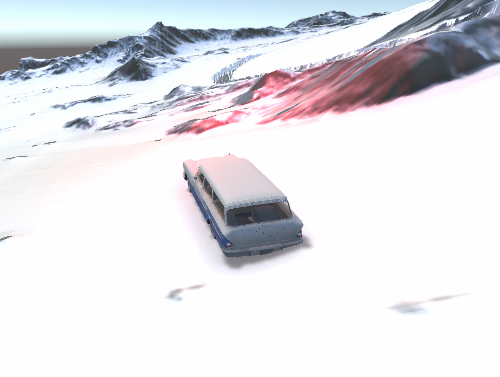 接下来，缺什么显而易见——雪和雾，这两个是雪山不可缺少的东西，可以说没有雪和雾就没有雪山。
雾使用了自己魔改的一块深度雾，增强了雾的颗粒感并压暗了亮度，同样是为了营造紧张刺激的感觉，雪用了一块跟随自己的粒子系统。
在这么黑暗的环境里开车，没有灯光怎么行，但是再做体积光的话性能估计受不了，于是在烘焙光和点光之间选择了点光。
但是这样改完总觉得还是缺少了什么，一顿思索之后发现……是运动模糊和径向模糊，这两个是赛车不可缺少的东西，可以说没有运动模糊和径向模糊就没有赛车。
这两个都是非常好写的后处理效果，这里就不再多提。
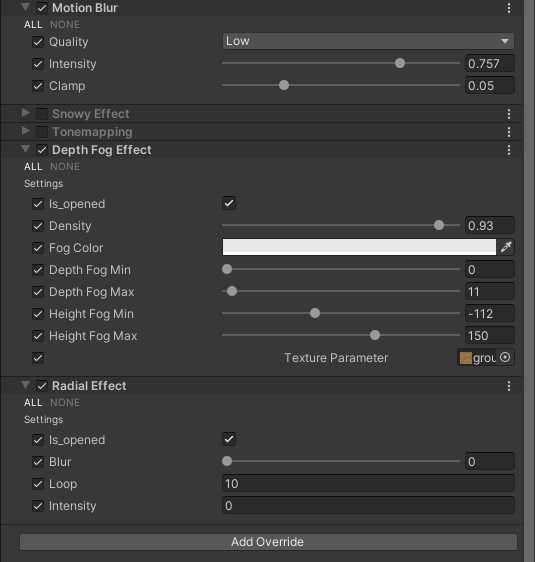
一通调参之后，就形成了最终的效果，完结撒花~
总之，在这个效果里，最困难和难以处理的地方其实还是采样率不够导致的误差问题，而降低帧数的罪魁祸首一是ComputeShader使用的纹理大小（个人用的4k纹理），二是高精度的曲面细分（这个具体开到多少取决于模型本身的精度了）。在真正的项目里，我们可能做出来各种九曲十八弯的地图，碰到各种阴间的机型兼容性导致的问题，没有实际上手做的时候以为这是个非常简单的项目，但事实是解决了一个问题又会出现其它的问题，到头来只能见招拆招，真正完成了之后还是很有成就感的。
不过还是很有趣的，真开心啊。